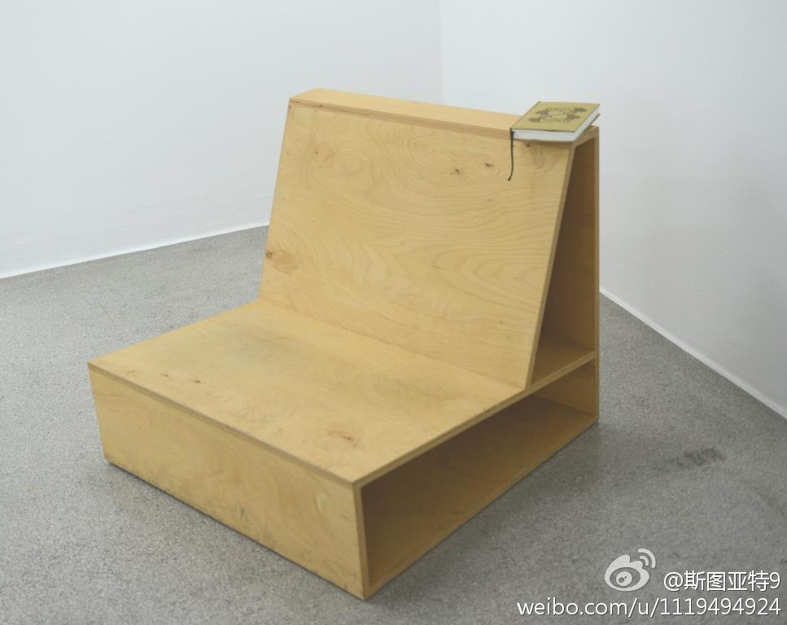

这三张都拍自维也纳的Secession Building（据说是某种现代艺术的重要展示厅）。一进门看到了第一张——我想了半天这是没修好么，之后才悟过来这是个艺术品。第二张我以为是个艺术品就欣赏了半天，进了下一个屋子才发现有一张同样的椅子且有个人坐在那看那本书。第三张我现在也没搞清楚是不是艺术品。 
布达佩斯机场被命名为李斯特·费伦茨机场，足见匈牙利人对这位伟大作曲家的崇敬。但如果李斯特出自维也纳，或许只能淹没在“维也纳作曲家”的列表中——莫扎特、海顿、贝多芬、舒伯特、约翰施特劳斯……而维也纳城市的名片是莫扎特（游览两个城市之后的感受） 匈牙利布达佩斯